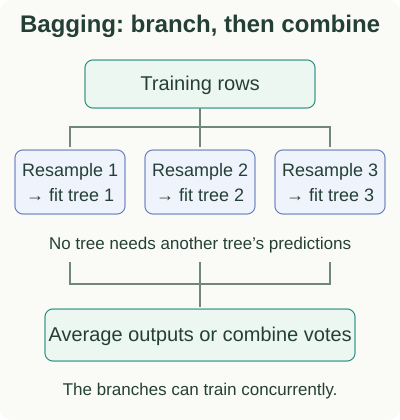
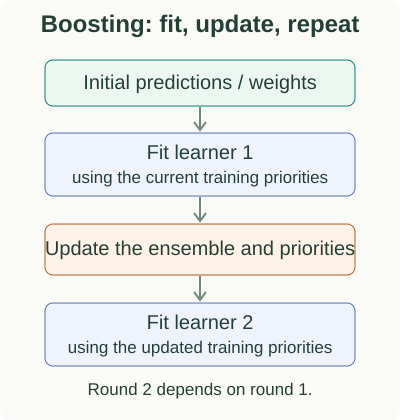

Bagging & Boosting: Interview Roadmap
Both bagging and boosting combine models, but they organize the work differently. This series explains their central calculations and gives small examples you can reproduce. If trees themselves are new, start with one tree’s questions and predictions.
Two ways to combine trees


In gradient boosting, the changing priorities are correction targets computed from the current predictions. In AdaBoost, they are example weights based on earlier learners’ errors. Both create a dependency between rounds. Parallel split search inside one round remains possible.
| Question | Bagging / random forest | Boosting |
|---|---|---|
| How is another tree trained? | Use a different resample; forests also vary candidate features. | Use the current ensemble to determine the next correction. |
| How are outputs combined? | Average predictions or use a specified voting rule. | Add corrections; AdaBoost adds weighted votes. |
| What can run in parallel? | Separate trees can train without waiting for each other. | Rounds depend on previous rounds; work inside a round can parallelize. |
For a concrete prediction, three regression trees outputting 4, 7 and 7 yield a bagged average of 6. A gradient-boosted model starting at 6 with a next-tree correction of −3 and learning rate 0.5 instead moves to $6+0.5(-3)=4.5$. These chosen outputs illustrate the combination rules; they are not fitted results from the same dataset. The next regression example shows where a correction actually comes from.
Why combining predictions can help
A model can be wrong in a consistent way, or its predictions can change substantially when the training sample changes. These are the ideas behind bias and variance. Averaging diverse trees can reduce the second problem; adding useful corrections can improve the first.
“Bagging reduces variance; boosting reduces bias” is a starting intuition, not a strict division. Either method can change both, and neither guarantees better test performance. The variance chapter quantifies what averaging can and cannot remove.
Two separate paths, one connected curriculum
Start with Bagging to learn sampling and averaging. Then follow Boosting to learn sequential corrections. Each folder has its own reading order and chapter navigation. The detailed topics below let you return to a specific calculation.
- Why does averaging trees help? Bootstrap samples, correlation, and OOB evaluation.
- How do mistakes change the next classifier? Two rounds of weights and the vote-strength derivation.
- Why fit residuals, and what changes for classification? One regression step followed by score updates.
- What do modern boosting libraries add? A concrete leaf and split calculation, then system differences.
- Can you explain and apply the ideas? Short prompts, optional answers, and implementation checks.
Read symbols where they are introduced
A tree is a function: route an input through its questions and return its leaf value. A stump has one split. An ensemble score need not be a probability. Each chapter introduces its remaining symbols immediately before using them.
For implementation detail after the core calculations, continue to the GBM series. You do not need to read both series end to end to learn the same derivation twice.
Sources and next steps
- Breiman: Random Forests — The strength-and-correlation view of tree ensembles.
- Schapire: The Boosting Approach — Sequential combination and the boosting framework.